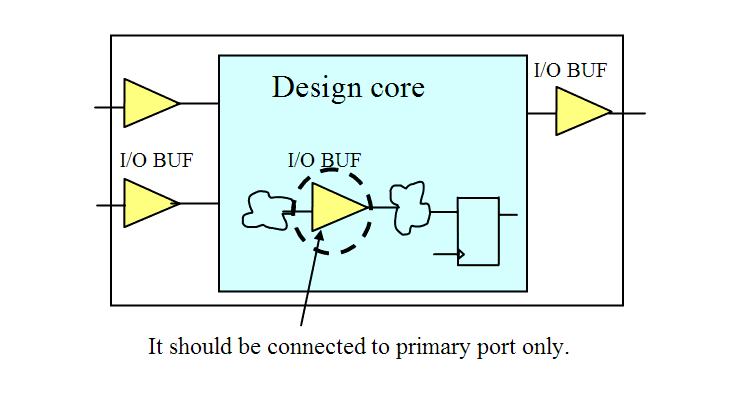

| Description | This rule fires when Leda detects a PAD terminal for an I/O buffer that is not connected to a primary port only. |
| Policy | DESIGN |
| Ruleset | PAD |
| Language | VHDL/Verilog |
| Type | Hardware |
| Severity | Error |
This is an example of invalid Verilog code, followed by a circuit diagram that illustrates the problem:
module ntl_pad14_top; ... wire net_01; // a interior signal // signal named with '_pad' is an input/output of top-level Design_core U0(Ctrl, Din, Dout); // I/O buffer cells GTECH_INBUF U1 (.PAD_IN(Ctrl_pad), .DATA_IN(Ctrl) ); GTECH_INBUF U2 (.PAD_IN(net_01), .DATA_IN(Din) ); // NTL_PAD14 fires -- I/O buffer is used, but the signal net_01 // is not a primary port GTECH_OUTBUF U3 (.DATA_OUT(Dout), .OEN(Ctrl), .PAD_OUT(Dout_pad)); endmodule